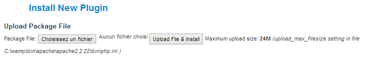

This plugin will add a tab on the user community builder profile that will list their invoices.
Please note that this plugin isn't a joomla plugin but
a Community Builder plugin.
In order to install this plugin, click on the 'Plugin
Management' link on the Community Builder Submenu.
Then select the zip folder containing the communitybuilder_invoicing_plugin and click Upload File & Install.
All you need to do to finish the installation is to publish the plugin.